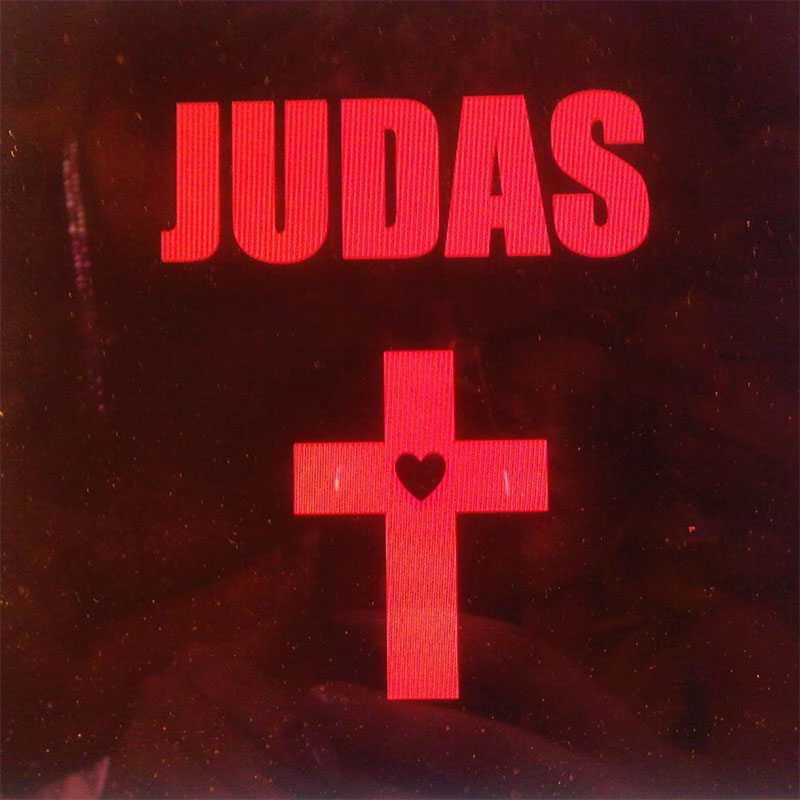

The album produced several chart-topping singles that not only dominated radio waves but also became anthems for a generation. Tracks like “Born This Way,” “Judas,” and “The Edge of Glory” blend infectious melodies with deep, often provocative themes of identity, freedom, and defiance. These songs were not just hits; they represented Gaga's unapologetic approach to pushing boundaries, exploring complex emotions, and celebrating the power of self-expression. Each single offered something unique, from club-ready bangers to introspective ballads, solidifying the album’s place as a cultural milestone. “Born This Way,” made an immediate impact, debuting at number one on the Billboard Hot 100, where it stayed for six consecutive weeks. It broke the record for the fastest-selling single in iTunes history at the time, reaching over 1 million downloads in just five days. “Judas” also performed well, reaching the Top 10 on the Billboard Hot 100, “The Edge of Glory” became Gaga's 10th Top 10 hit on the Billboard Hot 100, showcasing her longevity in pop music. Yoü & I, achieved moderate success, peaking at #6 on the Billboard Hot 100 and earning critical praise for its emotional depth and distinctive sound. “Marry the Night,” while not as commercially successful as some of the album's other singles, quickly gained a cult following. The song’s dramatic, cinematic sound and lyrics about reclaiming one’s strength were praised for their raw honesty and energy.br
On August 3, 2012, Gaga revealed that her original choice of singles was "Born This Way", "Marry the Night", "Scheiße" and "The Edge of Glory". According to her, Interscope Records didn't allow her to make "Scheiße" a single (probably because "scheiße" means "shit") so she decided to feature the song on the short film created for "Fame".
001. Born This Way
Release Date: February 11, 2011.
"Born This Way" debuted at number one on the Billboard Hot 100, becoming Lady Gaga’s third song to top the chart. The single broke records for digital downloads in a single week, selling over 1 million copies within its first week in the U.S. It went on to earn a Grammy Award nomination for Best Pop Solo Performance in 2012 and became a global anthem, recognized for its powerful message supporting LGBTQ+ rights and inclusion, resonating deeply with audiences worldwide.

002. Judas
Release Date: April 15, 2011
"Judas" brought controversy and acclaim with its bold lyrics and religious themes. Peaking at number 10 on the Billboard Hot 100, the song was recognized for its mix of dance-pop and house influences, echoing the themes of betrayal and forgiveness. Despite polarized responses, “Judas” solidified Lady Gaga’s reputation for pushing creative and cultural boundaries.
003. The Edge of Glory
Release Date: May 9, 2011
Inspired by personal loss, "The Edge of Glory" reached number three on the Billboard Hot 100, celebrated for its soaring chorus and powerful saxophone solo by Clarence Clemons. It received critical praise for its anthemic style and emotional depth, marking one of Gaga’s most memorable vocal performances and achieving multi-platinum status.
004. Hair
Release Date: May 16, 2011
"Hair" is an empowering anthem celebrating self-expression and individuality. With its rock influences and saxophone solo by Clarence Clemons, the song resonated with fans and critics alike, reaching number 12 on the Billboard Hot 100. Known for its relatable lyrics about embracing one’s identity, "Hair" added depth to the album’s message, becoming a beloved track for its bold take on personal freedom and acceptance.
005. Yoü and I
Release Date: August 23, 2011
"You and I" offered a heartfelt rock ballad that diverged from Gaga’s usual sound. Reaching number six on the Billboard Hot 100, the track showcased her vocal and songwriting range, blending country and rock influences. Gaga received acclaim for the song’s raw emotion, earning a Grammy nomination for Best Pop Solo Performance in 2012.
006. Marry the Night
Release Date: November 15, 2011
"Marry the Night" peaked at number 29 on the Billboard Hot 100, marking a dance-pop homage to perseverance and her journey in the music industry. Known for its cinematic music video, directed by Gaga herself, the song resonated with fans as a powerful anthem of resilience and self-acceptance.
007. Bloody Mary
Release Date: October 18, 2023
"Bloody Mary" draws on dark, religious themes, combining haunting vocals with an electronic beat. Although "Bloody Mary" was not an official single, it experienced chart success years after its release, largely due to social media, peaking at number 36 on Billboard’s Global Excl. U.S. chart in 2022. The track became a fan favorite over time, noted for its introspective lyrics and intense production, blending gothic and pop influences in a unique way that made it stand out within Gaga’s discography.
00* Born This Way (The Country Road Version)
Release Date: March 25, 2011 (promotional release)
Born This Way (The Country Road Version) offered a unique, stripped-down take on the original anthem, infusing elements of country and folk rock. This rendition highlighted Gaga’s versatility, bringing a fresh, Americana-inspired feel to her empowering lyrics. While the remix didn’t chart separately, it garnered praise from fans and critics alike, adding depth to the Born This Way era and showing Gaga's appreciation for country music influences.